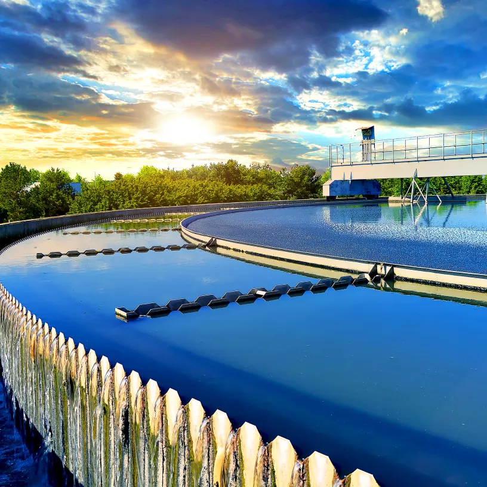
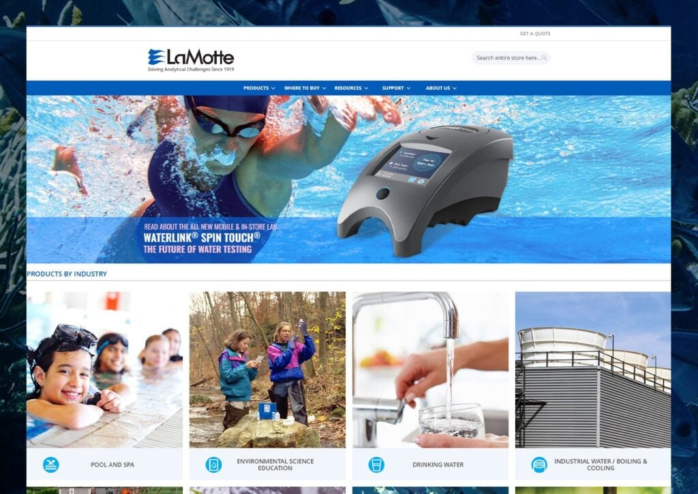
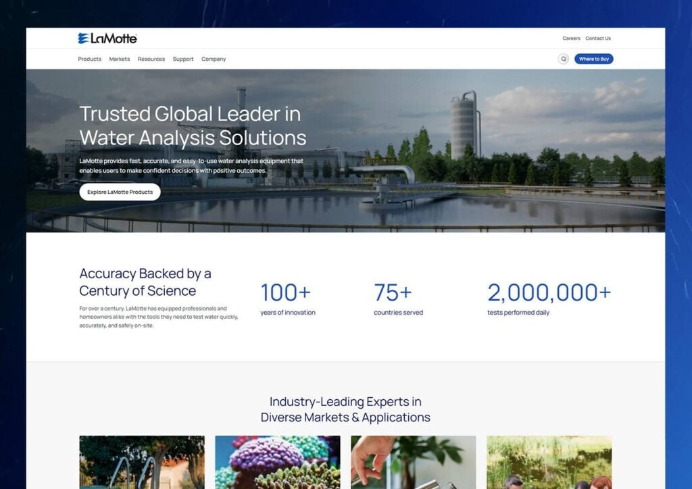
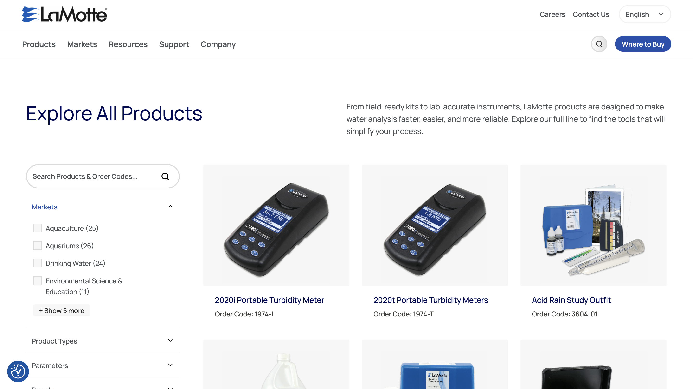

LaMotte has been helping organizations test and analyze water quality for decades. Their tools support everything from pools and spas to food and beverage, aquaculture, industrial systems, aquariums, and wastewater. But as their product line and markets expanded, their website struggled to keep up. It wasn’t clearly communicating the full scope of what they offer or showcasing their products in a way that felt modern and easy to understand.
Our goal was to create a site that clearly explains what LaMotte does, brings their products to life, and positions them as the industry leader they are. The result is a cleaner, more visual experience that makes complex information easier to navigate and absorb.


A Broad Offering That Was Hard to Explain
LaMotte serves a wide range of industries, but the old site struggled to clearly show how their products applied to each market. Visitors had to work too hard to connect the dots.
Product Pages That Felt Outdated
While LaMotte’s products are highly specialized and trusted, the product catalog and detail pages didn’t reflect that quality. Information was there, but it wasn’t presented in a clean or engaging way.
Inconsistent Page Needs Across the Site
Different product lines and markets required different types of content, but the site wasn’t flexible enough to support those variations. This made it harder to tell a clear, consistent story.
A Clearer Way to Navigate Complex Products
We restructured the site to better showcase LaMotte’s diverse markets and product lines. Visitors can now easily find what matters to them and quickly understand how each product fits into their specific use case.
A Visual System That Brings Water to Life
We introduced refreshed imagery, natural textures, and subtle motion to emphasize LaMotte’s connection to water. By blending lifestyle photos with product visuals, the design adds clarity and relevance without becoming overwhelming.
A Modern Experience That Signals Leadership
With light backgrounds, simple line accents, and thoughtful gradients, the new design feels open and modern. Custom visuals and a cohesive layout help position LaMotte as a forward-thinking leader in water analysis.
